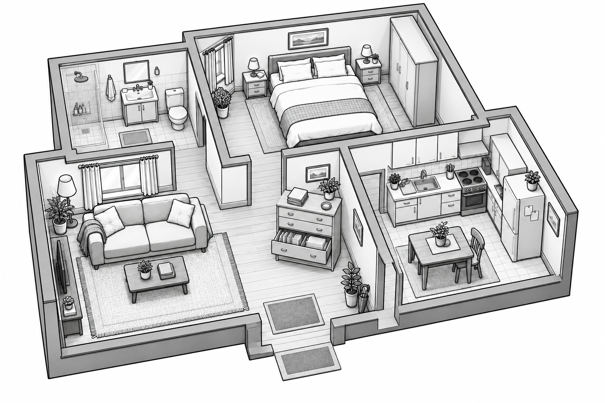

ІГРОВИЙ МІНІГІДАРКУШ 02 · ПІДГОТОВКА
Маленький квест
перед великим кроком
Проведи Краплика та Краплинку квартирою. Поговоріть про підготовку й зберіть три відмітки у паспорті.
0 із 3 відміток

 Краплик
Краплик Краплинка
КраплинкаЗ чого почнемо?
Натисни на спальню, кухню або вітальню. Герої дійдуть туди вільними проходами.
Підготовка — це турбота про себе ♥
Краплинка: «Тепер я знаю, як підготуватися!»
Краплик: «Перед виходом ще перевіримо самопочуття та документи».
Якщо зранку є слабкість, температура чи інше нездужання, краще перенести візит і проконсультуватися з фахівцями.
Це завершення навчального завдання. Рішення про допуск до донації приймає медичний працівник.Далі: збираємо сумку →Пам’ятка з інструкції
За 1–2 дні до візиту виключи жирну, смажену, копчену та надто гостру їжу. Відмовся від алкоголю щонайменше за 48 годин. Не плануй інтенсивних фізичних навантажень, дотримуйся звичного режиму харчування й пиття та намагайся добре висипатися.
У день донації обов’язково поснідай і пий достатньо води. Наприклад: каша на воді, шматочок хліба та солодкий чай. Перевір самопочуття та візьми необхідні документи.